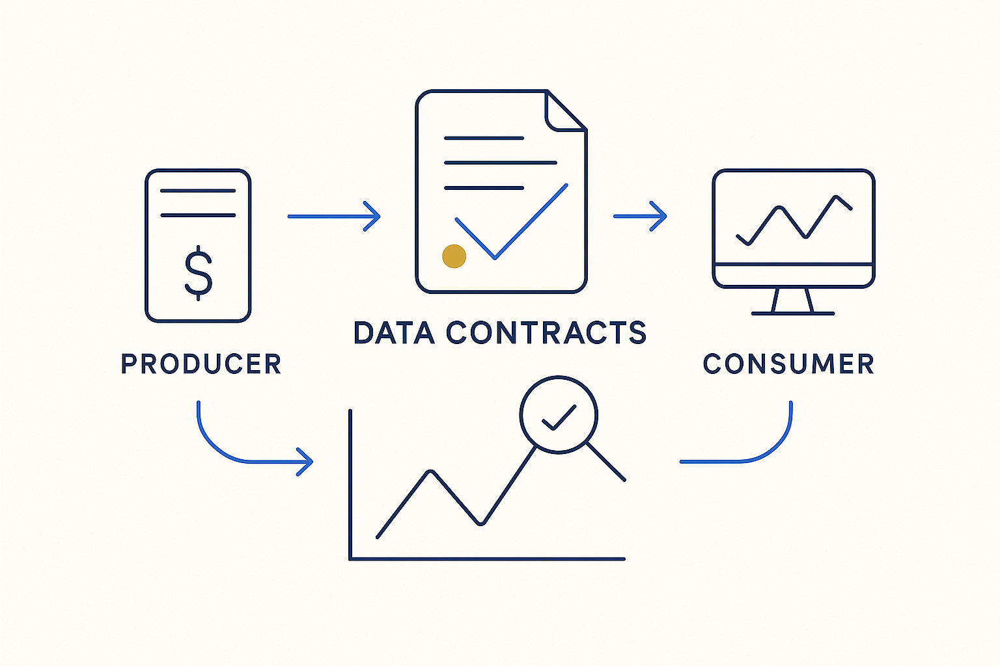

Crystal-clear, machine-readable agreements between a producing and a consuming system — what will be delivered, in what shape, at what quality — continuously monitored.

> Crystal-clear, machine-readable agreements between a producing and a consuming system — what will be delivered, in what shape, at what quality — continuously monitored.
A data contract is a crystal-clear agreement between the system that produces data and the system that consumes it: the schema, the meaning, the volume, the timing, the quality expected. The point is that it is *explicit and machine-readable* — not a shared assumption or an email thread, but a specification both sides commit to and a machine can check. When the producer changes something, the contract is what says whether that change is allowed.
Contracts only mean something if they are continuously monitored. A contract no one measures is just documentation; a contract with metrics attached becomes a live guarantee — the moment a delivery breaks the agreed shape, volume or freshness, it is visible immediately, on the producer’s side, before it poisons anything downstream. That is the difference between finding out at ingestion and finding out in a board report.
Contracts are the interface layer of ownership: ownership is the stance, accountability is being measured, and the contract is the agreed thing you are measured against. Modeled as metadata alongside deliveries and calendars, contracts make the whole hand-off between systems queryable and enforceable.
And an agreement is not a static fact — it has a lineage. At every level, a contract needs the same questions answered as data: how did this agreement develop over time, how is it monitored, who owns it, and who are the stakeholders? Version the contract like anything else, and the model can tell you not just what is agreed now, but how it got here, who changed it, and who has a stake in it holding. An agreement without that history is a claim; an agreement with it is governable.
Where it lives: the delivery layer of Breakthrough Modeling — the agreement, as data, continuously checked.